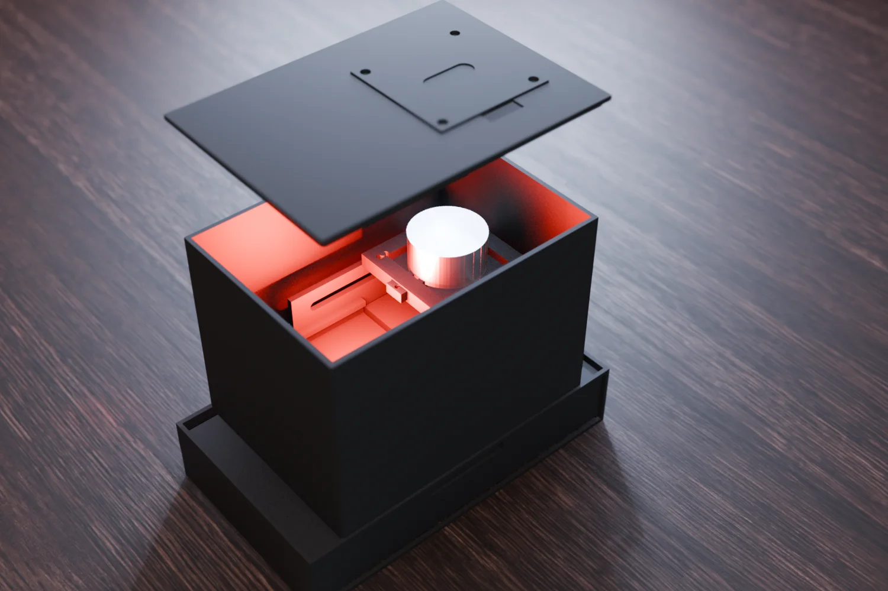

Wasserstoff aus Sonnenlicht
Anlagen, die mit Licht und Farbstoffen Wasserstoff erzeugen sollen, müssen jahrelang laufen. Dafür braucht es Farbstoffe, deren Alterung man planen kann.
Jugend forscht 2027 · Chemie · FOS Holzkirchen
Wir sagen voraus, wie lange ein Farbstoff Licht aushält – bevor er ausbleicht.
Das Problem
Farbstoffe fangen Licht ein – in Farbstoff-Solarzellen, in Lichtreaktoren, in der Medizin. Doch dasselbe Licht greift die Moleküle an: Die Farbe bleicht aus, die Wirkung lässt nach. Bisher merkt man das erst, wenn es schon passiert ist.
Die Natur macht es vor
Bei starker Sonne nimmt eine Pflanze laufend beschädigte Teile ihres Fotosystems auseinander und ersetzt sie. Technische Farbstoffe können das nicht. Deshalb wollen wir wissen, wie lange sie durchhalten.
Video: Ruslan Sikunov / Pexels
gelb · Ausgangszustand
Probier es aus
Wähle aus, was wir 2025 mit der gelben Foto-Blue-Bottle-Lösung gemacht haben – das Fläschchen zeigt, was passiert.
Beobachtungen und Fotos aus unserer Jugend-forscht-Arbeit 2025; Versuchsidee nach M. Tausch (Chemie mit Licht, 2019).
Echte Fotos aus unserem Versuch 2025 – antippen zum Vergleichen
Unser Werkzeug
In der Box steht eine Küvette mit Methylenblau. Eine LED bestrahlt sie von oben, ein Spektrometer misst quer dazu, wie viel Farbe noch übrig ist.

LED-Farben: 450, 480, 590 und 660 nm. Bei 664 nm schluckt Methylenblau am stärksten.
Takt: 11 Sekunden Licht, 4 Sekunden Messen im Dunkeln – sonst misst der Sensor die LED mit.
Licht von oben, Messstrahl quer. So sieht der Sensor die LED nicht direkt.
Die Kammer ist aus schwarzem PLA mit 3 mm Wandstärke – dünneres schwarzes PLA lässt rotes Licht durch. Die Elektronik sitzt außerhalb, denn in einer Dunkelkammer ist jede Status-LED eine Störlichtquelle.
3D-Rundgang durch die MessboxDie Idee
Zieh den Regler über das Spektrum: Die Kurve zeigt, wie viel Licht Methylenblau bei jeder Farbe schluckt. Unsere vier LEDs sind markiert.
Absorptionsspektrum von Methylenblau in Wasser: S. Prahl, Oregon Medical Laser Center (omlc.org/spectra/mb).
So rechnet unser ModellWofür das zählt
Wer vorher weiß, wann ein Farbstoff nachlässt, kann ihn rechtzeitig tauschen – statt erst zu reagieren, wenn die Leistung schon fällt.
Anlagen, die mit Licht und Farbstoffen Wasserstoff erzeugen sollen, müssen jahrelang laufen. Dafür braucht es Farbstoffe, deren Alterung man planen kann.

In Grätzel-Zellen fängt ein Farbstoff das Licht ein. Bleicht er aus, liefert die Zelle weniger Strom.

Bei der photodynamischen Therapie wirken Farbstoffe wie Methylenblau zusammen mit rotem Licht gegen Keime. Auch hier zählt, wie lange der Farbstoff hält.
Das Team
Chemie, Elektronik und Messbox · Projektleitung
Informatik, Vorhersagemodell und Design
Medizin, Dokumentation und Quellen
Staatliche Fachoberschule Holzkirchen · betreut von Stefanie Gerrer
Projektstand und Fragen